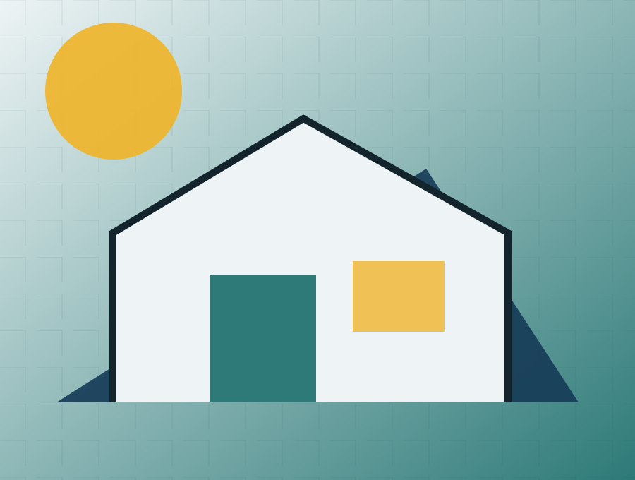

Hero
Látványkép és műszaki részlet a házról. Főcím: "[Ház neve] – mérnöki kivitelezés". Alcím: "Fix ár, fix határidő, fix tartalom". Kiemelt adatok: alapterület, szobák, technológia, idő. CTA: "Kérek mérnöki ajánlatot".
Személyes mérnöki figyelem és végig követhető szakmai kontroll. A típusház termékoldal célja, hogy a látogató egyértelmű szempontokkal jusson el a következő megalapozott döntésig.
Értünk hozzá. Az építés tudománya.
Drive-forráshoz igazított tesztoldal · publikálás nélkül
Személyes mérnöki figyelem és végig követhető szakmai kontroll.
Látványkép és műszaki részlet a házról. Főcím: "[Ház neve] – mérnöki kivitelezés". Alcím: "Fix ár, fix határidő, fix tartalom". Kiemelt adatok: alapterület, szobák, technológia, idő. CTA: "Kérek mérnöki ajánlatot".
Ismerteti, hogyan zárjuk ki a tipikus problémákat: eltűnő brigádok, csúszások, rejtett hibák, drágulás. Rövid, érthető magyarázat és bizonyíték (pl. fotódokumentáció, FMV tanúsítványok).
Felsorolás: 30 napos műszaki kontroll, 6 hónap, 1 év, digitális napló. Mit jelent a digitális napló, mit tartalmaz a karbantartási emlékeztető.
Rövid bemutató a Bautica által használt szerkezetekről (tégla, Liapor, Leier, faváz). Infografika az előnyökről és kompromisszumokról.
Kártyák: Szerkezetkész, Fűtéskész, Kulcsrakész, All In. Mindegyikhez tartalmak.
6‑7 lépéses folyamatábra (Helyszíni felmérés, Beépíthetőség vizsgálat, Költségvetés-készítés, Műszaki pontosítás, Szerződés, Kivitelezés, Átadás).
Helyszíni felmérés, Beépíthetőség vizsgálat, Költségvetés-készítés – linkelhető aloldalak.
Részletes magyarázat a garanciális rendszerünkről.
Esettanulmányok fotókkal, dokumentációval, helyszínnel, alapterülettel, kivitelezési idővel, kihívásokkal és ügyfélvéleménnyel.
Név, telefonszám, email, építkezés helyszíne, van‑e telek, van‑e terv, tervezett alapterület, kivitelezési szint, mikor szeretne kezdeni, üzenet. Extra opció: "Szeretne helyszíni felmérést?".
A preview nem küld adatot és nem tesz ajánlatot. Ár, határidő, garancia vagy szerződéses vállalás csak jóváhagyott evidence- és ajánlati rekord alapján jelenhet meg élesben.